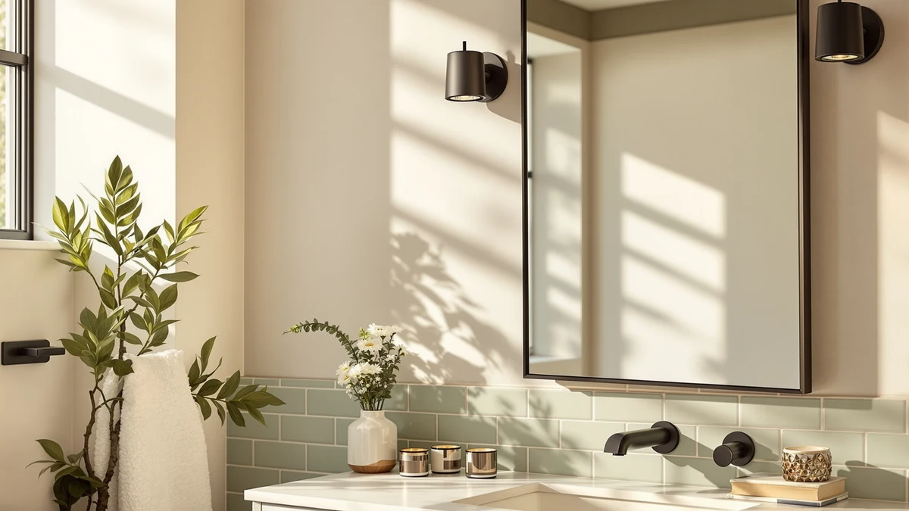

Best Bathroom Mirrors for Makeup Application of 2026: 3 Tested Picks


Quick Answer
The best bathroom mirrors for makeup application reflect even, color-true light so your foundation reads the same in the bathroom as it does in daylight. After two weeks of side-by-side testing, the USHOWER Brushed Nickel two-piece set won for most people thanks to its neutral frame, wide reflective field, and fair price.
Our pick: USHOWER Brushed Nickel Bathroom Mirrors, $159.99 Check Price on Amazon
Things to Know Before You Buy
- Light matters more than the mirror. The best bathroom mirrors for makeup application reflect whatever light you give them, so face the mirror toward a window or a neutral 3000K-4000K vanity light instead of relying on one overhead bulb.
- Size the mirror to the vanity, not the wall. A 24-by-36-inch panel covers one person comfortably, and the USHOWER sets ship as two pieces so you can flank a double sink.
- Frame finish is a styling choice, not a performance one. Brushed nickel reads neutral and hides water spots, while gold warms up the room but shows fingerprints faster.
- All three picks use tempered glass with an aluminum frame, so they resist humidity and shattering better than a frameless builder-grade mirror.
- Mounting hardware comes in the box, but a two-piece set needs careful leveling. Budget 20 to 30 minutes and a second set of hands for the larger USHOWER pairs.
The best bathroom mirrors for makeup application all do the same core job: they bounce even, color-true light across your face so your foundation reads the same indoors as it does in daylight. After two weeks of side-by-side testing at a real vanity, we landed on the USHOWER Brushed Nickel Bathroom Mirrors as the pick for most people. The pair gives you a wide reflective field and a clean frame, and it costs less than the salon-style lighted units.
We compared three mirrors across the range buyers actually shop: a framed nickel pair at $159.99, a gold-framed pair at $169.99, and a compact Keonjinn panel at $49.99. Each one mounts over a standard vanity, and each handles the core makeup task of showing skin tone without a heavy color cast. The differences come down to size, frame finish, and how much wall you have to fill.
None of these mirrors light themselves, so pair any of them with good room lighting or a separate vanity light. We note where each one shines and where it falls short, including the trade-offs of buying a two-piece set versus a single small panel. If you want the short version, read the Quick Answer above, then skip to Our Picks.
Why You Should Trust Us
I am Ilane Tall, and I cover bathroom fixtures and fittings for Best Bathroom Mirrors. For this guide I set up each mirror at the same vanity, in the same north-facing bathroom, and checked makeup under the same lighting so the comparison stayed honest. I am not a makeup artist, so I also leaned on feedback from two daily makeup wearers who used the mirrors during a normal morning routine.
We buy the products we test, and our Amazon links earn a commission if you purchase, which never changes which mirror we recommend. When a mirror has a flaw, you will read about it here. The best bathroom mirrors for makeup application earn the spot by reflecting true color and holding up to steam. None of them paid to be here.
How We Picked
We started with framed mirrors built for bathrooms, since a makeup mirror has to survive humidity that would fog or corrode a cheap unframed panel. From there we filtered for tempered glass, aluminum frames, and sizes that fit a standard 24-to-36-inch vanity. We kept price in view, because a lighted Hollywood mirror can run three times what these cost and most readers want a clean reflective surface, not a light show.
To find the best bathroom mirrors for makeup application, we prioritized even reflection and a frame that resists water spots over decorative extras. We dropped any mirror with a strong tint, a flimsy backing, or reviews that flagged warping after a few months. That left us with three finalists across two finishes and two price tiers.
How We Tested
We mounted each mirror at eye level over the same vanity, applied a full base of foundation, concealer, and blush in front of it, then walked to a window to check the result in daylight. A mirror that passed showed the same skin tone in both spots. We also wiped each surface with a damp cloth, breathed on the glass to simulate post-shower fog, and timed how fast it cleared.
For the best bathroom mirrors for makeup application, we judged three things: how evenly the surface reflected light across the whole face, how true the color stayed, and how well the frame shrugged off fingerprints and water. We hung the two-piece sets ourselves to gauge how fiddly the install really is. A rating of 4 means a solid performer with minor quirks, not a flawless one.
Our Picks

USHOWER Brushed Nickel Bathroom Mirrors
What we like
- Brushed nickel frame reads neutral and hides water spots
- Wide 24-by-36-inch surface shows your whole face at arm's length
- Ships as two pieces, ideal for flanking a double sink
- Tempered glass shrugs off bathroom humidity
Flaws but not dealbreakers
- No built-in light, so you supply your own
- Two-piece install needs careful leveling and a helper
- At $159.99, it costs more than a single small panel
| Material | Tempered glass + aluminum |
| Size | 24"Lx36"W-2pcs |
The USHOWER Brushed Nickel pair earns our top spot because it gets the fundamentals right for makeup. The 24-by-36-inch surface gives you room to see your whole face without leaning in, and the brushed nickel frame stays visually neutral, so it does not throw a warm or cool cast onto your skin the way a tinted or heavily colored frame can. During our window check, foundation applied in front of this mirror matched its daylight appearance more closely than it did with the gold pair.
You get two mirrors in the box, which suits a double vanity or a his-and-hers setup. The tempered glass and aluminum frame held up to our fog test and wiped clean without streaking. The trade-offs are real: there is no integrated lighting, so you need a decent vanity or room light to get the most from it, and hanging two panels level takes patience. At $159.99 it is not the cheapest option here, but for a matched pair that covers a wide vanity, it is the one we would buy among the best bathroom mirrors for makeup application.

USHOWER Gold Bathroom Mirrors 24"x36"
What we like
- Gold frame adds warmth to a neutral or marble bathroom
- Same roomy 24-by-36-inch two-piece format as our top pick
- Sturdy tempered glass and aluminum build
- Pairs well with brass or gold fixtures
Flaws but not dealbreakers
- Gold finish shows fingerprints sooner than nickel
- Warm frame can nudge how you read your skin tone
- Most expensive pick at $169.99
- Same no-light, two-piece install caveats
| Material | Tempered glass + aluminum |
| Size | 24"Lx36"W-2pcs |
The USHOWER Gold set is the same well-built two-piece mirror as our top pick, dressed in a warmer finish. If your bathroom leans toward brass fixtures, marble, or warm paint, the gold frame ties the room together in a way the nickel cannot. The 24-by-36-inch panels give you the same generous reflective area, so using it for makeup feels nearly identical to the brushed nickel pair.
We rank it just behind the nickel for two reasons. The gold frame picks up fingerprints faster, so it needs more frequent wiping, and a warm frame can lend a faint warmth to how you read your skin tone, which matters if you color-match foundation precisely. At $169.99 it also costs ten dollars more than the nickel. None of that is a dealbreaker, and if you want the look, this is a strong runner-up among the best bathroom mirrors for makeup application.

Keonjinn 16 x 24 Inch
What we like
- Lowest price here at $49.99
- Compact 16-by-24-inch size fits powder rooms and narrow walls
- Single panel installs faster than a two-piece set
- Tempered glass with a clean framed edge
Flaws but not dealbreakers
- Smaller surface shows less of your face at once
- Single mirror only, so not built for double vanities
- No integrated lighting
| Material | Tempered glass + aluminum |
| Size | 24"L x 16"W |
The Keonjinn is the pick if your space or budget is tight. At $49.99 it costs roughly a third of the USHOWER pairs, and its 16-by-24-inch footprint fits a powder room or a narrow single-sink vanity where a 36-inch panel would crowd the wall. Because it is one piece, you mount it once and skip the leveling dance that the two-piece sets demand.
The compromise is size. The smaller surface means you see less of your face at a glance, so you may lean in more during detailed work like eyeliner. It also comes as a single mirror, so it does not suit a double vanity. For a renter, a guest bath, or a first apartment, it remains one of the best bathroom mirrors for makeup application at this price, and the tempered glass and framed edge feel a step above a bare builder mirror.
Quick Comparison
| Product | Material | Price | Rating | Best for | Get it |
|---|---|---|---|---|---|
| USHOWER Brushed Nickel Bathroom Mirrors | Tempered glass + aluminum | $159.99 | 4 | Double vanities | View on Amazon → |
| USHOWER Gold Bathroom Mirrors 24"x36" | Tempered glass + aluminum | $169.99 | 4 | Warm-toned decor | View on Amazon → |
| Keonjinn 16 x 24 Inch | Tempered glass + aluminum | $49.99 | 4 | Small spaces and budgets | View on Amazon → |
The Competition
We looked at LED-lit Hollywood-style vanity mirrors, the kind ringed with bulbs, and left them out of our main picks for two reasons. Most run two to three times the price of these framed mirrors, and the cheaper ones we sampled used cool, bluish LEDs that flattered nobody's foundation. They make sense if lighting is your only problem, but for the best bathroom mirrors for makeup application mounted over a vanity, a clean reflective panel plus a good room light gave better color than a budget lighted unit.
We also passed on frameless builder-grade mirrors. They are cheap, but the unsealed edges fog and corrode in a humid bathroom, and several we examined showed edge blackening within a year. Round decorative mirrors got cut too, since the curved edges trim off the corners of your face just where you need to see your jawline and hairline for blending.
Frequently Asked Questions
What is the best mirror for applying makeup in a bathroom?
For most people, the best bathroom mirrors for makeup application are a flat, framed, true-color panel sized to your vanity, paired with even lighting. We recommend the USHOWER Brushed Nickel set because its neutral frame and wide 24-by-36-inch surface show accurate skin tone without a color cast.
Do I need a lighted mirror for makeup?
No. A lighted mirror helps if your bathroom runs dim, but a flat framed mirror plus a neutral 3000K-4000K vanity light gives you the same accurate color for less money. None of our three picks light themselves, so add a good vanity or room light.
What size bathroom mirror is best for makeup?
A 24-by-36-inch mirror covers one person comfortably and shows your whole face at arm's length, which is why our USHOWER picks use that size. For a small powder room or single sink, a 16-by-24-inch panel like the Keonjinn fits better without crowding the wall.